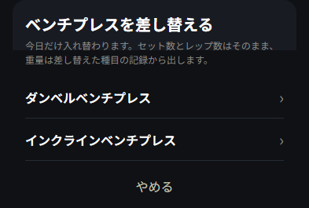
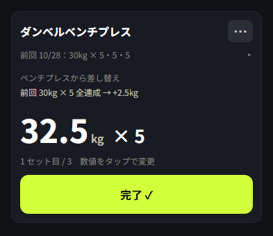

2026年11月15日の更新
アプリを開き直すと入ります。App Store からの更新は要りません。
マシンが埋まっている日、いつもと違うジムに行った日。これまでは「予定から外す」か「種目を足す」しかなく、どちらをしてもその日の予定が崩れて、部位ごとのセット数も消化率もずれていました。
種目ごとに代替を登録しておくと、記録タブのカードの ⋯ から「代替に差し替える（この日だけ）」で入れ替えられます。

重量は引き継ぎません。差し替えた種目の記録から、いつもどおり提案します。
ベンチプレス 85kg の日にダンベルベンチへ差し替えると、85kg ではなく、ダンベルベンチ自身の記録から出した重量になります。重量を引き継ぐと、挙がらない重量を提案することになり、その記録が残ってその後の提案まで狂うためです。

登録のしかた
メニュータブ → 種目 → 種目を選ぶ → 「代替種目」の「＋ 代替を足す」。